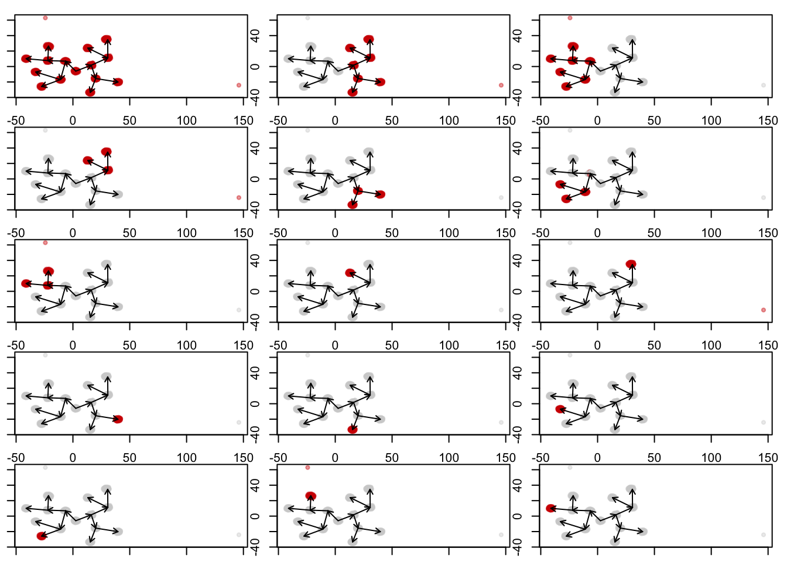
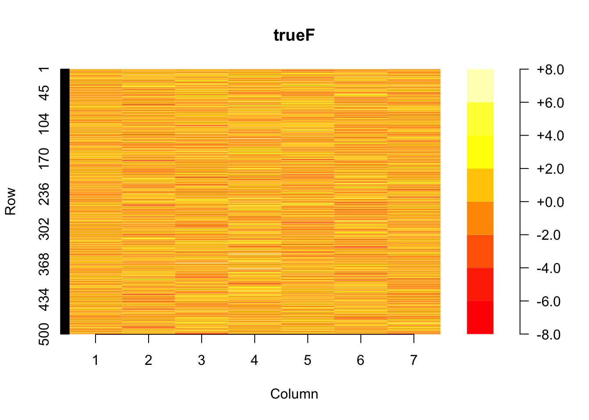

Tree Algorithm using LFSR
Sue Parkinson
2022-02-01
Last updated: 2022-02-21
Checks: 6 1
Knit directory: treedata.nosync/
This reproducible R Markdown analysis was created with workflowr (version 1.7.0). The Checks tab describes the reproducibility checks that were applied when the results were created. The Past versions tab lists the development history.
The R Markdown file has unstaged changes. To know which version of the R Markdown file created these results, you’ll want to first commit it to the Git repo. If you’re still working on the analysis, you can ignore this warning. When you’re finished, you can run wflow_publish to commit the R Markdown file and build the HTML.
Great job! The global environment was empty. Objects defined in the global environment can affect the analysis in your R Markdown file in unknown ways. For reproduciblity it’s best to always run the code in an empty environment.
The command set.seed(20220117) was run prior to running the code in the R Markdown file. Setting a seed ensures that any results that rely on randomness, e.g. subsampling or permutations, are reproducible.
Great job! Recording the operating system, R version, and package versions is critical for reproducibility.
Nice! There were no cached chunks for this analysis, so you can be confident that you successfully produced the results during this run.
Great job! Using relative paths to the files within your workflowr project makes it easier to run your code on other machines.
Great! You are using Git for version control. Tracking code development and connecting the code version to the results is critical for reproducibility.
The results in this page were generated with repository version 80b384a. See the Past versions tab to see a history of the changes made to the R Markdown and HTML files.
Note that you need to be careful to ensure that all relevant files for the analysis have been committed to Git prior to generating the results (you can use wflow_publish or wflow_git_commit). workflowr only checks the R Markdown file, but you know if there are other scripts or data files that it depends on. Below is the status of the Git repository when the results were generated:
Ignored files:
Ignored: .DS_Store
Ignored: .Rhistory
Ignored: analysis/figure/
Ignored: data/.DS_Store
Ignored: data/ContinuousTrees/.DS_Store
Ignored: data/NodeTrees/.DS_Store
Ignored: data/NodeTrees/NodeTree1/.DS_Store
Ignored: data/NodeTrees/NodeTree2/.DS_Store
Ignored: data/NodeTrees/NodeTree3/.DS_Store
Ignored: data/NodeTrees/NodeTree4/.DS_Store
Ignored: data/NodeTrees/NodeTree5/.DS_Store
Ignored: data/NodeTrees/NodeTree6/.DS_Store
Ignored: data/NodeTrees/NodeTree7/.DS_Store
Ignored: data/NodeTrees/NodeTree8/.DS_Store
Ignored: data/NodeTrees/NodeTree9/.DS_Store
Ignored: data/dynversetree/.DS_Store
Ignored: data/dynversetree/EBMFfactors/.DS_Store
Ignored: figure/.DS_Store
Ignored: figure/divergence_counterexample.Rmd/
Ignored: figure/using_EBMF.rmd/.DS_Store
Ignored: output/.DS_Store
Ignored: output/ContinuousTrees/.DS_Store
Ignored: output/ContinuousTrees/tree1/.DS_Store
Ignored: output/ContinuousTrees/tree1/EBMFfactors/.DS_Store
Ignored: output/ContinuousTrees/tree2/.DS_Store
Ignored: output/ContinuousTrees/tree2/EBMFfactors/.DS_Store
Ignored: output/ContinuousTrees/tree3/.DS_Store
Ignored: output/ContinuousTrees/tree3/EBMFfactors/.DS_Store
Ignored: output/ContinuousTrees/tree4/.DS_Store
Ignored: output/ContinuousTrees/tree4/EBMFfactors/.DS_Store
Ignored: output/NodeTrees/.DS_Store
Ignored: output/NodeTrees/NodeTree1/.DS_Store
Ignored: output/NodeTrees/NodeTree1/EBMFfactors/.DS_Store
Ignored: output/NodeTrees/NodeTree2/.DS_Store
Ignored: output/NodeTrees/NodeTree2/EBMFfactors/.DS_Store
Ignored: output/NodeTrees/NodeTree3/.DS_Store
Ignored: output/NodeTrees/NodeTree3/EBMFfactors/.DS_Store
Ignored: output/NodeTrees/NodeTree4/.DS_Store
Ignored: output/NodeTrees/NodeTree4/EBMFfactors/.DS_Store
Ignored: output/NodeTrees/NodeTree5/.DS_Store
Ignored: output/NodeTrees/NodeTree5/EBMFfactors/.DS_Store
Ignored: output/NodeTrees/NodeTree6/.DS_Store
Ignored: output/NodeTrees/NodeTree6/EBMFfactors/.DS_Store
Ignored: output/NodeTrees/NodeTree7/.DS_Store
Ignored: output/NodeTrees/NodeTree7/EBMFfactors/.DS_Store
Ignored: output/NodeTrees/NodeTree8/.DS_Store
Ignored: output/NodeTrees/NodeTree8/EBMFfactors/.DS_Store
Ignored: output/NodeTrees/NodeTree9/.DS_Store
Ignored: output/NodeTrees/NodeTree9/EBMFfactors/.DS_Store
Unstaged changes:
Modified: analysis/lfsr_algorithm.Rmd
Note that any generated files, e.g. HTML, png, CSS, etc., are not included in this status report because it is ok for generated content to have uncommitted changes.
These are the previous versions of the repository in which changes were made to the R Markdown (analysis/lfsr_algorithm.Rmd) and HTML (docs/lfsr_algorithm.html) files. If you’ve configured a remote Git repository (see ?wflow_git_remote), click on the hyperlinks in the table below to view the files as they were in that past version.
| File | Version | Author | Date | Message |
|---|---|---|---|---|
| Rmd | 80b384a | Sue Parkinson | 2022-02-21 | update with new flashier & leaf only dataset |
| Rmd | 46a5ae8 | Sue Parkinson | 2022-02-21 | update for new version of flashier |
| html | 46a5ae8 | Sue Parkinson | 2022-02-21 | update for new version of flashier |
| Rmd | 6d4dba2 | Sue Parkinson | 2022-02-21 | changing how labels are handled, add function for plotting nodetree loadings |
| html | 89db76c | Sue Parkinson | 2022-02-07 | Build site. |
| Rmd | 9e0712c | Sue Parkinson | 2022-02-07 | update write-up for LFSR algorithm |
| html | c7fa1cc | Sue Parkinson | 2022-02-07 | Build site. |
| Rmd | 7aa1343 | Sue Parkinson | 2022-02-07 | workflowr::wflow_publish(files = "analysis/lfsr_algorithm.Rmd") |
| html | c59dc85 | Sue Parkinson | 2022-02-02 | add images and updated index |
| Rmd | 7576043 | Sue Parkinson | 2022-02-02 | more additions to LFSR algorithm |
| Rmd | 12cbad1 | Sue Parkinson | 2022-02-01 | start lfsr algorithm |
Introduction
First, I load in the code from the code/fileIO_plotting.R and code/lfsr_algorithm.R.
source("code/fileIO_plotting.R")
source("code/lfsr_algorithm.R")The Data
Load in the simulated test data, and plot a dimensionality reduction.
nodetree <- form_tree_from_file('data/NodeTrees/NodeTree4/NodeTree4.csv')
palette=1:20Algorithm Performance
Compute the drift factorization using LFSR.
nodetree$trajectory$lfsr_drift <- lfsr_algorithm(dat=nodetree$matrix,labels=nodetree$labels)Visualizing the Loadings
When we visualize loadings, I use the function plot_nodetree_loadings from code/fileIO_plotting. The first plot created by this function is the dimensionality reduction colored according to the loadings for each factor. The second plot shows the actual numerical values of each loading.
Even without back fitting, the loadings do a good job of detecting the tree structure. Unfortunately, L is not binary; that is, the loadings are not constant on each factor.
plot_nodetree_loadings(nodetree,
loadings=nodetree$trajectory$lfsr_drift$L.pm)
| Version | Author | Date |
|---|---|---|
| c59dc85 | Sue Parkinson | 2022-02-02 |
| Version | Author | Date |
|---|---|---|
| c59dc85 | Sue Parkinson | 2022-02-02 |
Backfitting
To try to get closer to a true drift factorization, I try to backfit, which by default respects the sparsity pattern in the loadings. Unfortunately, this makes the factorization closer to a naive factorization which is 1 on the loadings for one label, and zero elsewhere. This decreases the ability to interpret these loadings as detecting how populations co-descend from a particular parent node.
nodetree$trajectory$lfsr_drift_backfit <- flash.backfit(nodetree$trajectory$lfsr_drift)
plot_nodetree_loadings(nodetree,
loadings=nodetree$trajectory$lfsr_drift_backfit$L.pm)
First set loadings to be binary and then backfit?
One sort of silly thing I tried to do is take the sparsity structure defined by the first algorithm, force L to be a binary matrix, and then fit the factors to that. It’s sort of a brute force algorithm.
In practice I actually just initialize a new flash object and then use the flash.fix.factors and flash.backfit to initialize with binary loadings
#set up priors
driftprior <- ebnm_point_exponential
Fprior <- ebnm_normal
#initialize with binary L and previous value for F
Linit <- nodetree$trajectory$lfsr_drift_backfit$L.pm > 0
Finit <- nodetree$trajectory$lfsr_drift_backfit$F.pm
K <- nodetree$trajectory$lfsr_drift_backfit$n.factors
#fit F
nodetree$trajectory$lfsr_binary_loadings <- flash.init(nodetree$matrix) %>%
flash.set.verbose(0) %>%
flash.init.factors(list(Linit,Finit),
ebnm.fn=c(driftprior,Fprior)) %>%
flash.fix.factors(kset=1:K,mode=1) %>%
flash.backfit(extrapolate=FALSE)
#plot results
plot_nodetree_loadings(nodetree,loadings=nodetree$trajectory$lfsr_binary_loadings$L.pm)
| Version | Author | Date |
|---|---|---|
| c59dc85 | Sue Parkinson | 2022-02-02 |
| Version | Author | Date |
|---|---|---|
| c59dc85 | Sue Parkinson | 2022-02-02 |
It definitely finds the correct structure, but one could picture it may not be entirely robust. This is something to potentially explore.
Force binary loadings as you go?
Alternatively, you could force the loadings to be binary as you go. This results in roughly the same thing, but perhaps with slighly better results. I changed the functionality of the add_factor function to allow for this.
#TODO THROWS SE error
nodetree$trajectory$lfsr_drift_force_binary <- lfsr_algorithm(dat=nodetree$matrix,labels=nodetree$labels,allfixed=TRUE)
plot_nodetree_loadings(nodetree,nodetree$trajectory$lfsr_drift_force_binary$L.pm)Backfit after forcing to be zeros and ones?
Backfitting after enforcing the binary structure doesn’t seem to change anything.
nodetree$trajectory$lfsr_drift_force_binary_backfit <- flash.backfit(nodetree$trajectory$lfsr_drift_force_binary)
plot_nodetree_loadings(nodetree,nodetree$trajectory$lfsr_drift_force_binary_backfit$L.pm)Sometimes gives error when all the standard deviations are zero
Unfortunately, I wasn’t able to run this algorithm on certain datasets because I kept getting an error about standard deviations being zero. This happened with the nodetree dataset seen above with lfsr_tol=1e-2 instead of lfsr_tol=1e-3, and with thecontinuoustree dataset. However, changing to the internally enforced binary algorithm fixed this.
#running this code gives an error
res <- lfsr_algorithm(dat=nodetree$matrix,labels=nodetree$labels,lfsr_tol=1e-2,verbose=1)
plot_nodetree_loadings(nodetree,res$L.pm)Some interesting results on certain datasets
Here are some interesting results using the enforced binary structure.
First is a noisy dataset. We see in these results that with a smaller LFSR tolerance, it detects less structure, as one might anticipate. In some ways the local false sign rate allows us to specify how sure we want to be that we’re really finding tree structure. UPDATE: with new flashier package, it doesn’t find the additional structure with higher lfsr_tol.
nodetree <- form_tree_from_file('data/NodeTrees/NodeTree3/NodeTree3.csv')
#run method with lfsr 1e-2
# TODO raises standard errors must be positive and nonzero error -- why?
res <- lfsr_algorithm(dat=nodetree$matrix,labels=nodetree$labels,lfsr_tol=1e-1,verbose=1)Backfitting 1 factors (tolerance: 5.22e-03)...
An update to factor 1 decreased the objective by 7.112e-01.
Wrapping up...
Done.
Backfitting 1 factors (tolerance: 5.22e-03)...
Difference between iterations is within 1.0e+02...
Difference between iterations is within 1.0e+01...
Difference between iterations is within 1.0e+00...
Difference between iterations is within 1.0e-01...
Difference between iterations is within 1.0e-02...
Wrapping up...
Done.
Length of Queue 1
Backfitting 1 factors (tolerance: 5.22e-03)...
Difference between iterations is within 1.0e+00...
Difference between iterations is within 1.0e-01...
Difference between iterations is within 1.0e-02...
Wrapping up...
Done.
Backfitting 1 factors (tolerance: 5.22e-03)...
Difference between iterations is within 1.0e+02...
Difference between iterations is within 1.0e+01...
Difference between iterations is within 1.0e+00...
Difference between iterations is within 1.0e-01...
Difference between iterations is within 1.0e-02...
Wrapping up...
Done.
Backfitting 1 factors (tolerance: 5.22e-03)...
Difference between iterations is within 1.0e+00...
Difference between iterations is within 1.0e-01...
Difference between iterations is within 1.0e-02...
Wrapping up...
Done.
Backfitting 1 factors (tolerance: 5.22e-03)...
--Estimate of factor 4 is numerically zero!
Difference between iterations is within 1.0e+01...
Wrapping up...
Done.
Factors: 3
Length of Queue 2
Backfitting 1 factors (tolerance: 5.22e-03)...
Difference between iterations is within 1.0e+00...
Difference between iterations is within 1.0e-01...
Difference between iterations is within 1.0e-02...
Wrapping up...
Done.
Backfitting 1 factors (tolerance: 5.22e-03)...
--Estimate of factor 5 is numerically zero!
Difference between iterations is within 1.0e+01...
Wrapping up...
Done.
Backfitting 1 factors (tolerance: 5.22e-03)...
Difference between iterations is within 1.0e+00...
Difference between iterations is within 1.0e-01...
Difference between iterations is within 1.0e-02...
Wrapping up...
Done.
Backfitting 1 factors (tolerance: 5.22e-03)...
--Estimate of factor 6 is numerically zero!
Difference between iterations is within 1.0e+01...
Wrapping up...
Done.
Factors: 5
Length of Queue 3
Factors: 5
Length of Queue 2
Factors: 5
Length of Queue 1
Factors: 5 plot_nodetree_loadings(nodetree,res$L.pm)
| Version | Author | Date |
|---|---|---|
| c59dc85 | Sue Parkinson | 2022-02-02 |
#run method with lfsr 1e-2
res <- lfsr_algorithm(dat=nodetree$matrix,labels=nodetree$labels,lfsr_tol=1e-2)
plot_nodetree_loadings(nodetree,res$L.pm)
| Version | Author | Date |
|---|---|---|
| c59dc85 | Sue Parkinson | 2022-02-02 |
#run method with lfsr 1e-3
res <- lfsr_algorithm(dat=nodetree$matrix,labels=nodetree$labels,lfsr_tol=1e-3)
plot_nodetree_loadings(nodetree,res$L.pm)Also, a very simple tree, which it recovers very well.
nodetree <- form_tree_from_file('data/NodeTrees/NodeTree1/NodeTree1.csv')
#recreate colormap for this nodetree's labels
color <- nodetree$labels
pal <- colorRamp(palette)
newcolor <- color/max(abs(color)) / 2 + 0.5
newcolor <- alpha(rgb(pal(newcolor)/255),0.4)
#run method
res <- lfsr_algorithm(dat=nodetree$matrix,labels=nodetree$labels,lfsr_tol=1e-3)
plot_nodetree_loadings(nodetree,res$L.pm)Just using leaf data
Here is the algorithm run on a data set with just leaf data. Unfortunately, it only added one factor. I this is beacuse the LFSR’s are numerically close to zero.
nodetree <- form_tree_from_file('data/NodeTrees/NodeTree1/NodeTree1.csv')
nodetree$IsLeaf = nodetree$csv$IsLeaf=="True"
#run method on leaf data
res_lfsr <- lfsr_algorithm(dat=nodetree$matrix[nodetree$IsLeaf,],
labels=nodetree$labels[nodetree$IsLeaf],
lfsr_tol=1e-3)
print(max(res_lfsr$L.lfsr,na.rm = TRUE))Warning in max(res_lfsr$L.lfsr, na.rm = TRUE): no non-missing arguments to max;
returning -Inf[1] -Inf#try divergence fit?
res_div <- div_fit(dat=nodetree$matrix[nodetree$IsLeaf,],
labels=nodetree$labels[nodetree$IsLeaf])
plot_nodetree_loadings(nodetree,res_div$L.pm) #works great
| Version | Author | Date |
|---|---|---|
| c7fa1cc | Sue Parkinson | 2022-02-07 |
| Version | Author | Date |
|---|---|---|
| c7fa1cc | Sue Parkinson | 2022-02-07 |
print(max(res_div$L.lfsr,na.rm = TRUE))[1] 4.588846e-06#try drift fit?
res_drift <- drift_fit(dat=nodetree$matrix[nodetree$IsLeaf,],
labels=nodetree$labels[nodetree$IsLeaf])
plot_nodetree_loadings(nodetree,res_drift$L.pm) #works greatprint(max(res_drift$L.lfsr,na.rm = TRUE))[1] 0#run method on leaf data with tiny lfsr tol
res_lfsr <- lfsr_algorithm(dat=nodetree$matrix[nodetree$IsLeaf,],
labels=nodetree$labels[nodetree$IsLeaf],
lfsr_tol=1e-10)
# TODO I think all the lfsrs are nans bc they're all fixed.
# why is this a non issue otherwise?
print(max(res_lfsr$L.lfsr,na.rm = TRUE)) #all lfsrs are nans...Warning in max(res_lfsr$L.lfsr, na.rm = TRUE): no non-missing arguments to max;
returning -Inf[1] -Infplot_nodetree_loadings(nodetree,res_lfsr$L.pm) #works greatDoes setting L to be binary give the “correct” F?
Lets check by finding the true F and comparing against the computed F.
#get computed F
computedF <- res$F.pm
#get true F
labels <- unique(nodetree$labels)
trueF <- matrix(nrow=dim(nodetree$matrix)[2],ncol=length(labels))
## first factor is the mean of the root node
trueF[,1] <- colMeans(nodetree$matrix[nodetree$labels == 0,])
## get the nodes that are parents
parents <- labels[1:(length(labels)/2)]
## initialize index of child and num children per node
childidx <- 2
children_per_node <- 2
## differences are the factors
for (parent in parents){
parent_mean <- colMeans(nodetree$matrix[nodetree$labels == parent,])
for (childnum in 1:children_per_node){
child <- labels[childidx]
child_mean <- colMeans(nodetree$matrix[nodetree$labels == child,])
factor <- parent_mean - child_mean
trueF[,childidx] <- factor
childidx <- childidx + 1
}
}First, we should compute the relative error in F. I first rescale both matrices to account for an arbitrary scaling factor.
maxabs <- function(data){
return(max(abs(data)))
}
trueF <- trueF/apply(trueF, 2,max)
computedF <- computedF/apply(computedF, 2,max)library('plot.matrix')
par(mar=c(5.1, 4.1, 4.1, 4.1))
plot(trueF,border=NA)
par(mar=c(5.1, 4.1, 4.1, 4.1))
plot(computedF,border=NA)Another sanity check is that the factors should be independent. Below we visualize the true and computed covariance matrices.
par(mar=c(5.1, 4.1, 4.1, 4.1))
plot(cov(trueF))par(mar=c(5.1, 4.1, 4.1, 4.1))
plot(cov(computedF))It looks like they’re still fairly correlated, unfortunately. But it wouldn’t be hard to get \(F\) from \(L\) in other ways. I’m just not sure why flash doesn’t compute it itself.
Trying with the covariance matrix instead
This didn’t seem to work very well. It throws errors about standard errors being zero in some cases, and in other cases it doesn’t detect the tree structure very well.
# TODO throws error abt standard errors
# res <- lfsr_algorithm(dat=nodetree$matrix,labels=nodetree$labels,lfsr_tol=1e-2,cov=TRUE)
# plot_nodetree_loadings(nodetree,res$L.pm)
# TODO throws error abt standard errors
# res <- lfsr_algorithm(dat=nodetree$matrix,labels=nodetree$labels,lfsr_tol=1e-1,cov=TRUE)
# plot_nodetree_loadings(nodetree,res$L.pm)
#performs poorly; doesn't separate parents from children very well
res <- lfsr_algorithm(dat=nodetree$matrix,labels=nodetree$labels,lfsr_tol=1e-3,cov=TRUE)
plot_nodetree_loadings(nodetree,res$L.pm)# TODO throws error abt standard errors
#performs poorly still
# res <- lfsr_algorithm(dat=nodetree$matrix,labels=nodetree$labels,lfsr_tol=1e-4,cov=TRUE)
# plot_nodetree_loadings(nodetree,res$L.pm)Using an exponential prior
Instead of a point-exponential prior
TODO
sessionInfo()R version 4.1.2 (2021-11-01)
Platform: aarch64-apple-darwin20 (64-bit)
Running under: macOS Monterey 12.0.1
Matrix products: default
BLAS: /Library/Frameworks/R.framework/Versions/4.1-arm64/Resources/lib/libRblas.0.dylib
LAPACK: /Library/Frameworks/R.framework/Versions/4.1-arm64/Resources/lib/libRlapack.dylib
locale:
[1] en_US.UTF-8/en_US.UTF-8/en_US.UTF-8/C/en_US.UTF-8/en_US.UTF-8
attached base packages:
[1] stats graphics grDevices utils datasets methods base
other attached packages:
[1] plot.matrix_1.6.1 dequer_2.0-1 dyno_0.1.2
[4] dynwrap_1.2.2 dynplot_1.1.2 dynmethods_1.0.5
[7] dynguidelines_1.0.1 dynfeature_1.0.0 fields_13.3
[10] viridis_0.6.2 viridisLite_0.4.0 spam_2.8-0
[13] ebnm_0.1-59 forcats_0.5.1 stringr_1.4.0
[16] purrr_0.3.4 readr_2.1.1 tidyr_1.1.4
[19] tibble_3.1.6 ggplot2_3.3.5 tidyverse_1.3.1
[22] flashier_0.2.22 magrittr_2.0.2 dplyr_1.0.8
[25] scales_1.1.1 RColorBrewer_1.1-2 workflowr_1.7.0
loaded via a namespace (and not attached):
[1] colorspace_2.0-3 ellipsis_0.3.2 rprojroot_2.0.2
[4] dynparam_1.0.2 fs_1.5.2 rstudioapi_0.13
[7] farver_2.1.0 graphlayouts_0.8.0 remotes_2.4.2
[10] dynutils_1.0.9 ggrepel_0.9.1 fansi_1.0.2
[13] lubridate_1.8.0 ranger_0.13.1 xml2_1.3.3
[16] codetools_0.2-18 splines_4.1.2 knitr_1.37
[19] polyclip_1.10-0 jsonlite_1.7.3 broom_0.7.11
[22] ashr_2.2-47 dbplyr_2.1.1 ggforce_0.3.3
[25] shiny_1.7.1 compiler_4.1.2 httr_1.4.2
[28] backports_1.4.1 assertthat_0.2.1 Matrix_1.4-0
[31] fastmap_1.1.0 cli_3.2.0 tweenr_1.0.2
[34] later_1.3.0 htmltools_0.5.2 tools_4.1.2
[37] igraph_1.2.11 dotCall64_1.0-1 gtable_0.3.0
[40] glue_1.6.1 reshape2_1.4.4 maps_3.4.0
[43] Rcpp_1.0.8 GA_3.2.2 softImpute_1.4-1
[46] cellranger_1.1.0 jquerylib_0.1.4 vctrs_0.3.8
[49] iterators_1.0.13 ggraph_2.0.5 xfun_0.29
[52] ps_1.6.0 trust_0.1-8 rvest_1.0.2
[55] mime_0.12 lifecycle_1.0.1 irlba_2.3.5
[58] MASS_7.3-55 getPass_0.2-2 tidygraph_1.2.0
[61] babelwhale_1.0.3 hms_1.1.1 promises_1.2.0.1
[64] parallel_4.1.2 yaml_2.2.1 gridExtra_2.3
[67] sass_0.4.0 dyndimred_1.0.4 stringi_1.7.6
[70] SQUAREM_2021.1 highr_0.9 deconvolveR_1.2-1
[73] REBayes_2.50 desc_1.4.0 foreach_1.5.1
[76] truncnorm_1.0-8 horseshoe_0.2.0 rlang_1.0.1
[79] pkgconfig_2.0.3 evaluate_0.14 lattice_0.20-45
[82] invgamma_1.1 patchwork_1.1.1 processx_3.5.2
[85] tidyselect_1.1.2 plyr_1.8.6 R6_2.5.1
[88] generics_0.1.2 DBI_1.1.2 pillar_1.7.0
[91] haven_2.4.3 whisker_0.4 carrier_0.1.0
[94] withr_2.4.3 proxyC_0.2.4 mixsqp_0.3-43
[97] modelr_0.1.8 crayon_1.5.0 lmds_0.1.0
[100] utf8_1.2.2 tzdb_0.2.0 rmarkdown_2.11
[103] grid_4.1.2 readxl_1.3.1 callr_3.7.0
[106] git2r_0.29.0 reprex_2.0.1 digest_0.6.29
[109] xtable_1.8-4 httpuv_1.6.5 RcppParallel_5.1.5
[112] munsell_0.5.0 bslib_0.3.1